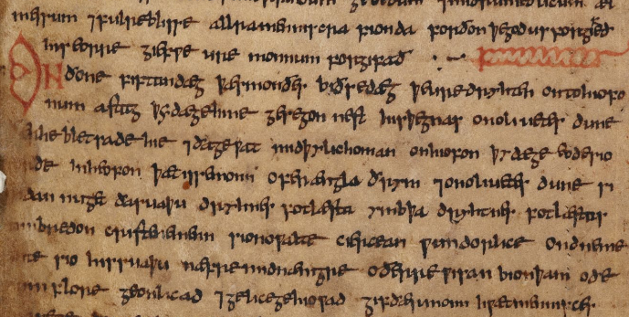

Grammar of Old English — quite different from the grammar of modern English. Being one of the ancient Germanic languages, Old English has a morphological system that is similar to the Germanic one, retaining many of the changes that were common in the Proto-Indo-European language, as well as the characteristic elements of German grammar, for example, umlaut. Among living languages, the morphology of Old English is closest to the modern Icelandic language, which is one of the most conservative Germanic languages; To a lesser extent, Old English is similar to modern German. In Old English, nouns, pronouns, adjectives and definitions had five cases (nominative, accusative, genitive, dative, and instrumental), two grammatical numbers (singular and plural), and three grammatical gender (male, female and neuter). The first and second person personal pronouns had dual forms for referring to two people, and also had the usual forms of the singular and plural [1]. Variants in the instrumental case were quite rare and existed only in the masculine and neuter singular. They were often replaced by the dative. Adjectives, pronouns and (sometimes) participles were consistent with the preceding nouns in number and field. Verbs are consistent in person and number. In Old English there was a complex system of declensions with a large variety of endings. The verbs had nine basic conjugations (seven strong and two weak), all with numerous subtypes, as well as several other conjugations and several irregular verbs. The main difference between Old English and other ancient Indo-European languages, such as Latin, was that verbs had conjugations in only two tenses (versus six in Latin). The grammatical gender of the noun does not necessarily correspond to the true gender, even for nouns, referring to people. For example, the word sēo sunne (sun) was feminine, the word se mōna (moon) was masculine, and þæt wīf “woman / wife” was neuter.
Morphology
Verbs
Verbs in Old English were divided into strong and weak verbs. In strong verbs, the combinatorial changes that vowels in different positions underwent were important. Weak verbs were derived from other words with a suffix. The main difference between these two types of verbs was that the weak verbs, as opposed to the strong ones, used the past tense of the dental suffix (-d-, -t-, -ð-, etc.): the weak verb deman (judged) in the past tense is dem-de—, and the strong verb helpan in the past tense is healp.
Strong verbs
- ī + one consonant. Grade 1 is formed either from a noun or from other verbs. In regular class 1 verbs, the root vowel in all forms has been subjected to a nepragovke under the influence of the element -i in the suffix. In the 1st grade there were 11 irregular verbs.
- ēo or ū + one consonant.
- The meaning and form of the suffix is difficult to isolate: -ai- or -ē-. Verbs that have h or Ʒ + consonant after alternating vowels.
- e + consonant (usually l or r ,, plus the verb brecan 'break'). In grade 4 there are specific verbs with special phonetics.
- e + consonant
- a + consonant In Old English, Grade 6 has split into two variants: the variant with 'a' at the base of the present tense and the variant with the 'e' and the doubled consonant at the base of the present tense.
- Always the root word (either long vowel or short + two consonants). Includes verbs that previously formed the past tense with the help of partial root doubling (haitan call - called haihait).
The light roots of the verb consisted of a short vowel followed by a one-time consonant, while the rest were heavy. The third class of verbs was divided into five subclasses :).
- e + two consonants (except words beginning with L).
- eo + r or h + another consonant.
- e + l + is another consonant.
- g, c, or sc + ie + two consonants
- i + nasal + one more consonant.
Verse-presentation verbs
In the preterito-present verbs, the present tense forms by origin are past tense forms. These forms are formed on the pattern of a strong past. In Old English, preteritized-present verbs also had past tense forms, however, like all non-personal forms, they were new formations. Modern verbs can, may, shall, etc. refer to the only present tense. The verbs ought and must go back to the past tense, that is, they are doubly preterito-present.
Irregular Verbs
There is a group of four verbs that are irregular: “want” (modern “will”), “do”, “go” and “be”. These are the most commonly used verbs in the language. Verb conjugations of 'to do' gān 'to go', willan 'to want' in present tense.
The verb 'to be' had three different forms.
Nouns
The noun in Old English had five cases: the nominative, accusative, dative, genitive, and the remnants of the instrumental. In addition, nouns had different endings depending on whether the noun is in the singular (for example, hring "one ring") or plural (for example, hringas "many rings"). Nouns are also subdivided into grammatical gender - male, female and neuter. The masculine and neuter sorts of words are distinguished by endings, and the feminine gender has its own subset of endings. In addition, Old English nouns are divided into strong or weak. Weak nouns have their endings. In general, weak nouns are less complex than strong nouns, as they began to lose their declension system.
Adjectives
Adjectives in Old English tend as well as categories, as nouns: five cases (nominative, accusative, genitive, dative and instrumental), three genders (masculine, feminine, neuter) and two numbers (singular, plural). In addition, in Old English, two types of adjective declensions were distinguished: strong (indefinite) and weak (definite)
The weak declination of adjectives is similar to the declension of nouns with the basics of -n, except for the plural form of the genitive case in which adjectives have the ending -ra (from strong declination) instead of -ena or -na. For the formation of forms of degrees of comparison of adjectives, suffixes were used: a comparative degree was characterized by the suffix -r-, excellent st- (betst). In addition, in the form of superlatives, a connecting vowel was usually put before the suffix, which appeared in two versions: the -E- option and -O- option.
Numerals
In Old English, the names of numbers from 1 to 12 are represented by their roots. The numbers from 13 to 19 were formed by adding the bases of numerals, which denote units, and the numeral tīen (tyn, tēn), for example: fiftīene - 15; eahtatīene - 18; nigontīene - 19 and others. Ordinal numerals, starting with four, formed by adding the suffix -þa (if the root of the cardinal number ended in a vowel or sonorous consonant), and -ta (if the root ended in a deaf consonant). In this case, the final -n before the suffix-þa fell out. Quantitative and ordinal numerals varied in cases. The case forms of cardinal numbers coincided with the forms of strong declination of adjectives, and the case forms of ordinal numbers, with the forms of weak declination of adjectives.
Prepositions
Prepositions in Old English, as in modern English, are often used with the words that they govern, in this case they are called postpositions. In addition, if the object of the preposition was in the dative case, then the preposition could be located anywhere in the sentence. In Old English, a sentence could be impassable (Norðan sniwde - it was snowing in the north) and vaguely personal, which could be constructed using the pronoun man. The role of prepositions in this period was reduced mainly to clarifying the values of case relations.
Pronouns
In Old English there were various classes of pronouns: personal, possessive, demonstrative, interrogative, relative and indefinite. The declension system of different types of pronouns was not the same. Personal pronouns had grammatical categories similar to noun categories. All other pronouns were inclined like nouns, except that, unlike them, some pronouns had five case forms, adding the form of the instrumental case. In Old English, pronouns also had a dual form (for talking about groups of two individuals, for example, “we are two” or “two”). Despite the fact that the dual form of pronouns is rarely used in Old English, it has been preserved in modern English.
Many ancient forms of pronouns have analogues in modern English: for example, in the genitive case ēower became “your”, ūre became “our”, mīn became “mine”. As a result of the dissimilation that took place, some forms of pronouns do not correspond to their modern equivalents. The female nominative hēo was at some time replaced by the female nominative sēo, yielding “she”.
Syntax
Old English syntax was in many ways similar to modern. The main thing in the syntax is how to create sentences and study various patterns of sentences. The basic principles of constructing sentences in the course of the history of the English language have remained unchanged. Changes have occurred in ways of combining words. The main role in the creation of sentences in Old English belonged to the predicate expressed by the personal form of the verb. The subject in the Old English sentence was characterized by a nominative case. In complex subordinate sentences, there were no special words for connecting subordinate clauses.
Word order
In Old English, there was a free word order in a sentence. However, the free word order meant the possibility of only a small deviation from the usual sequence. Such a sequence was: subject + predicate + additions + circumstances. The definition often preceded the word being defined. Freedom of speech was sometimes used to express direction. So, in the Buton on feawum stowura stycce - maelum wlciaS Finnas sentence, the Finnas subject is in last place and is a word that introduces a new thought into the sentence.
Phonology
The phonology of the Old English language is studied mainly from written sources. There is a very large body of texts in Old English, indicating phonological alternations quite accurately. From these materials, certain conclusions are drawn about the character of Old English phonology.